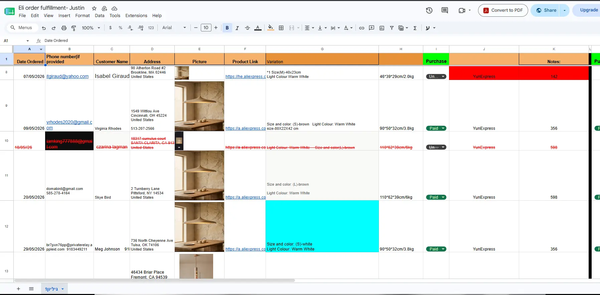
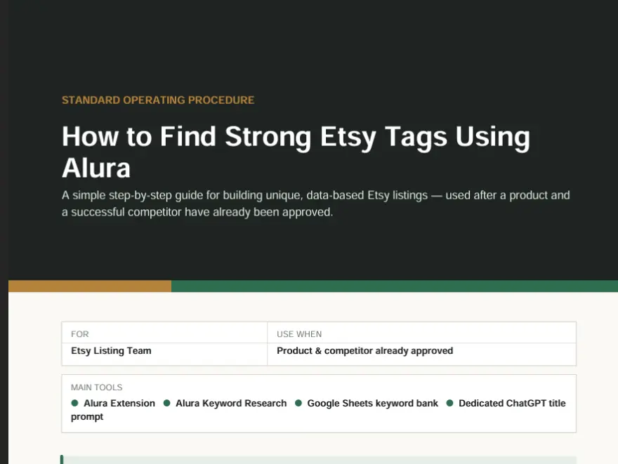
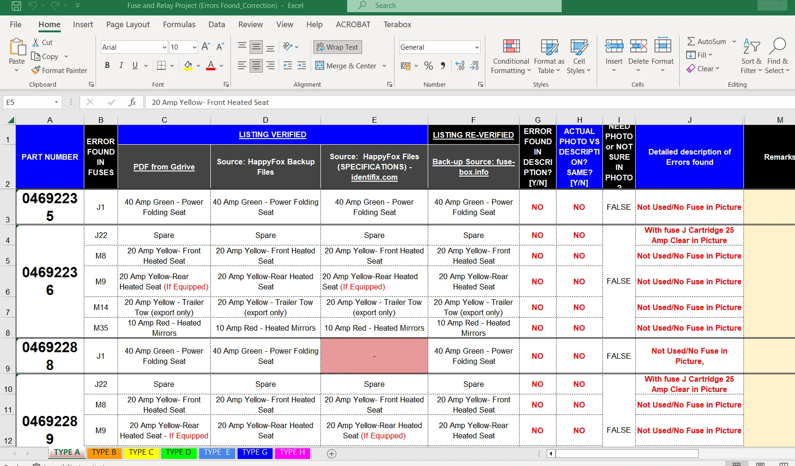
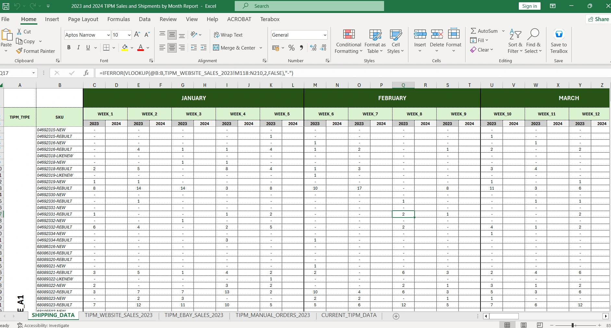
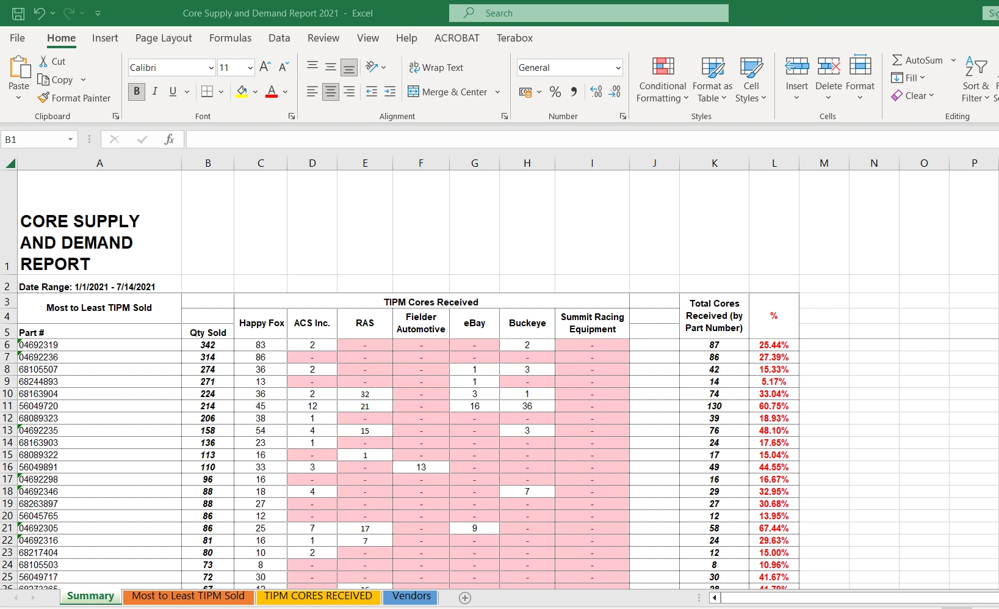

E-Commerce Operations
- Product listings
- Marketplace SEO
- Catalog & inventory
- Orders & fulfillment
- Customer support
- Supplier coordination
Available for remote work · International clients
I help business owners run the marketplace and back-office side of their business — product listings, catalogs, inventory, orders and suppliers — along with the administrative work and technical troubleshooting that keep everything else on track.
Featured work
The context, what I actually handled, the tools I used, and what it did for the business.
An automotive parts manufacturer and rebuilder selling electronic control modules and replacement parts across WooCommerce and eBay, where listing accuracy and vehicle fitment data directly affect whether a buyer orders the right part.
WooCommerce · WordPress · Elementor · eBay Seller Hub · ShipStation · Adobe Photoshop · Excel
High-volume catalog updates were processed while maintaining product-data accuracy, reducing listing backlogs during peak periods.
An Etsy operation needed daily storefront management, dropshipping fulfillment coordinated with an overseas supplier, and stronger marketplace visibility through keyword-driven listing optimization.
Etsy Seller · Alura · EtsyHunt · 1688 · AliExpress · Canva · ChatGPT · Google AI Studio
Daily storefront operations remained organized across listings, inventory, supplier coordination, fulfillment and customer concerns, while keyword and competitor research supported ongoing listing optimization.
A single custom apparel order of 1,000 pieces, requiring sourcing, production and delivery to be coordinated against a fixed customer deadline.
Google Sheets · Microsoft Excel · supplier coordination by email and messaging
Sourcing, production, quality control and delivery were tracked as a single coordinated process rather than improvised — the same approach I bring to client projects with a fixed deadline and many moving parts.
How I can help
Ongoing support for the operational side of your business, so you can spend your time on the parts only you can do.
Product research, listing creation and marketplace SEO across eBay, Etsy, Amazon, Walmart, WooCommerce, Shopee and Lazada. Catalog and SKU management, product data and specifications, vehicle-fitment records, pricing, and customer inquiries and order concerns — helping keep product, catalog and marketplace information accurate, organized and up to date.
Inventory monitoring and reconciliation, order processing and fulfillment tracking in tools like ShipStation, pricing updates, and sales and fulfillment reporting. Supplier coordination, including sourcing through 1688 and AliExpress for dropshipping workflows.
Email and calendar management, scheduling, meeting coordination, business correspondence, reports and SOP documentation. HR and recruitment administration — job postings, candidate communication, interview scheduling and onboarding paperwork — plus vendor coordination, procurement and expense tracking.
Hardware, software and network troubleshooting, Windows and Linux server administration, pfSense and OPNsense firewall setup, and RingCentral/VoIP systems support. A useful differentiator — I troubleshoot my own tools and provide practical troubleshooting support when technical issues affect day-to-day operations.
Supporting skills: AI-assisted product visuals and Canva editing for marketplace content, plus Adobe Photoshop product-image editing for e-commerce listings.
Real e-commerce work
Storefronts I've worked on directly, grouped by client engagement. Each link opens the live store.
Live storefront content may have changed since my engagement; links are provided as context for the stores I supported.
One manufacturer, four storefronts across eBay and WooCommerce · Jan 2021 – Mar 2025
Automotive parts
eBay Seller Hub · Photoshop · Excel
View live storeAutomotive parts
eBay Seller Hub · Photoshop · Excel
View live storeAutomotive parts
WordPress · WooCommerce · Elementor
View live storeAutomotive parts
WordPress · WooCommerce · Photoshop
View live storeStorefront group for an Etsy seller based in Israel · May 2026 – Jul 2026
Handmade travertine pendant lamps
Etsy Seller · Canva · Google Sheets
View live storeHandmade wooden chandeliers
Etsy Seller · Canva · 1688 / AliExpress
View live storeMedieval dresses & historical clothing
Etsy Seller · Google Sheets · Canva
View live storeActual work
Real examples of e-commerce, operational, and product-content work I've handled. Client, customer, employee, and commercially sensitive information has been removed, anonymized, or replaced where necessary.
Operational systems, reporting, catalog work, fulfillment, and process documentation I've handled across real client engagements.

Etsy Store Management
E-Commerce Operations · Order Fulfillment · Google Sheets
Managed a structured order-fulfillment tracker covering customer orders, product variations, supplier details, purchasing status, package information, fulfillment, and operational notes.
View sample →🔒 Confidential data replaced

Etsy Store Management
Marketplace SEO · SOP Documentation · Alura
Contributed to creating a step-by-step SOP for Etsy keyword and tag research using Alura, competitor research, a structured keyword bank, and an AI-assisted title workflow.
View sample →🔒 Internal workflow partially shown

Maks DataTech
Automotive E-Commerce · Catalog Management · Quality Control
Cross-referenced automotive fuse and relay information across multiple sources to identify inconsistencies in product descriptions, images, and catalog data, documenting discrepancies and correction notes in Excel.
View sample →🔒 Internal data anonymized

Maks DataTech
E-Commerce Operations · Data Reporting · Microsoft Excel
Built and maintained an Excel workbook used to consolidate and compare SKU-level sales and shipment activity across website, eBay, and manual-order data.
Excel: VLOOKUP · IFERROR · Cross-sheet references
View sample →🔒 Portfolio-safe data

Maks DataTech
E-Commerce Operations · Inventory Analysis · Supply Planning
Built and maintained an Excel report comparing product sales with available replacement-core supply by part number to support inventory, supplier, and demand planning.
View sample →🔒 Commercial data replaced
Listing visuals and product-content work created to support e-commerce storefronts and marketplace listings.
AI-generated product visuals, including lifestyle scenes, product-detail images, size and measurement graphics, and variation-specific visuals, selected and prepared for e-commerce listings in Canva.
Tools: ChatGPT · Google AI Studio · Canva
AI-generated visuals · Canva edited · Actual Etsy work
AI-generated product visuals for chandelier listings, including product presentation, lifestyle imagery, and detail views, selected and prepared for e-commerce listings in Canva.
Tools: ChatGPT · Google AI Studio · Canva
AI-generated visuals · Canva edited · Actual Etsy work
Developed and prepared AI-generated product visuals for Etsy listings through prompt development, visual variation generation, output selection, Canva editing, and listing-ready preparation.
Tools: ChatGPT · Google AI Studio · Canva
AI-generated visuals · Canva edited · Actual Etsy work
Prepared automotive product listing graphics by editing product images and organizing key product, compatibility, warranty, and shipping information into marketplace-ready visual assets.
Tools: Adobe Photoshop
Actual e-commerce work · Edited in Adobe Photoshop
Trusted by clients
Tools
Platforms and tools I've used across marketplace operations, reporting, fulfillment, supplier coordination, product content, business operations, and technical support.
A background in IT support means I handle my own setup, troubleshoot my own tools, and can help when something technical breaks on your side.
About
I'm Johnny, an E-Commerce & Operations Specialist with an IT support background based in the Philippines. My career has spanned business operations, e-commerce and technical support since 2016, with e-commerce experience dating back to 2018 and remote experience supporting international clients and teams.
Most of my work sits in the operational layer that keeps a business moving: product listings, catalogs, inventory, orders and suppliers on the e-commerce side, along with documentation, reporting, coordination and administrative workflows behind the business. I work independently, keep records organized, and document processes so work is easier to follow and hand over.
Having also founded and operated my own printing business and worked in IT support, I understand both the operational side of running a business and the technical systems that support it. That combination is especially useful when an e-commerce or operations role also requires practical troubleshooting and technical problem-solving.
Interested in discussing a role or opportunity? I'd be happy to send you the resume version most relevant to the position. You can contact me via email or WhatsApp.
Contact
Tell me about the role, project, or operational challenge you're trying to solve. I'll come back with how I can help and what it would take to get started.
I usually reply within one business day. WhatsApp is fastest.
{kind=link}
{kind=link}
{kind=link}
{kind=link}
{kind=link}
{kind=link}
{kind=link}
{kind=link}
{kind=link}
{kind=link}
{kind=link}
{kind=link}